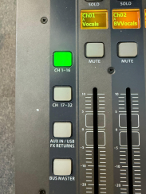
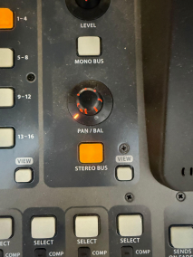
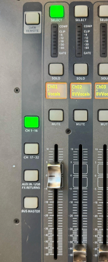
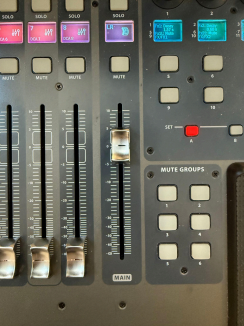
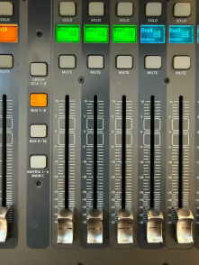
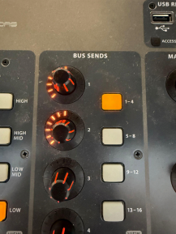

The Penthouse
The Penthouse Video Guide
Watch the video above for instructions on using The Penthouse.
Penthouse Written Guide
Sound
Make sure the mixer, speakers, and the stagebox are on. Make sure that the mixer is set to CH 1-16, and that the selected channel(s) are on Stereo Bus.


Plug any extra inputs into the stagebox. Sound for the TV should be plugged into channel 1 and 2 on the box (though this can be changed).
To get sound, select the channel, raise the fader, and raise the MAIN fader on the right.


For the monitor speakers (on the floor of the stage): Bus 1 is stage right, Bus 2 is stage left. Make sure that Bus 1-8 are selected, and that knobs on the bus sends are up to get sound.

